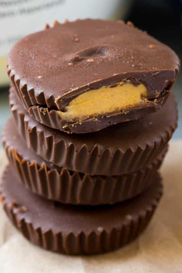

Protein Peanut Butter Cups

Description
This Protein Peanut Butter Cups recipe is a high protein version of the classic treat
that everyone loves. They are homemade, easy to make, so creamy, delicious and only need 4 ingredients to make.
We enjoy making desserts and this Protein Peanut Butter dessert recipe is one of our favorites! They are easy to make
and the kids love making their own. Sometimes they add sprinkles in them and once my son decided to add grape jelly in
his and I have to admit it tasted amazing. This creamy and high protein dessert is the perfect treat to have without any guilt.
Ingredients
- 1/3 Cup Smooth peanut butter
- 1 Scoop Whey Protein vanilla flavor
- 1 ½ Cups Dark chocolate chips
- 1 Tbsp Coconut oil
Steps
- Place 6 paper liners in the wells of a muffin tin and set aside.
- In a small bowl, mix together the protein powder and peanut butter until smooth.
- Place the chocolate chips and coconut oil in a bowl; microwave in 30-second increments until fully melted.
- Place approximately 1 tablespoon of melted chocolate in the bottom of each liner. Place the muffin tin in the freezer for 10 minutes or until chocolate is set.
- Place 2 teaspoons of the peanut butter mixture on top of the chocolate layer.
- Add an additional tablespoon of chocolate on top of the peanut butter mixture. Chill until firm.
- Store in the refrigerator until ready to serve.
Go to top Main page